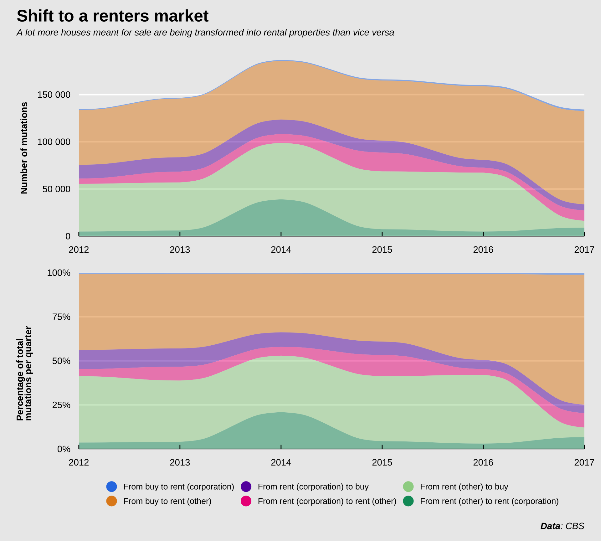

Visualizing the State of the Amsterdam Housing Market
June 20, 2021
For this post, I decided to hide most of the code chuncks to improve legibility. All figures and tables were created with the {ggplot} and {gt} packages. If you want to see how I created these plots, look at the Rmarkdown file
Introduction
I’m at the age where a lot of my peers start thinking about buying a home. It is a major conversation topic around the office, and these conversations are not often filled with optimism and excitement. Oslo is a notoriously expensive city to live in, and the housing market is very tough.
Of all the worrying events in 2020, Millenials and Gen Z kids ranked financial instability as the second most common driver of stress, the most common being the welfare of their family (link). Today I want to dissect one of the possible causes of this economic anxiety: the housing market. Now, I’m not an economist nor a financial expert. Nonetheless, I believe I can leverage some of my knowledge of data wrangling and analysis to contribute a small piece to this topic. My insight into the Oslo housing market is fairly limited to so far and there’s many nuances I don’t fully understand yet, but I do think I have some relevant knowledge of the Dutch housing market. So today I’ll dive into some data on the Dutch market, and particularly the Amsterdam housing market. There’s countless stories about the Amsterdam housing market and how terrible it is for new buyers, similar to the Oslo housing market. However, in my opinion the Amsterdam housing market is already a few steps ahead of the Oslo market, and hopefully the Amsterdam market can offer some warnings about what the Oslo housing market might look like in a few years without some policy corrections.
This will be a fairly basic data analysis and visualization post, I can’t claim that this is an exhaustive list and that I didn’t miss some nuances, but I’ll give it . I collected some data from the Amsterdam Real Estate Association (Makelaars Vereniging Amsterdam; MVA) and statistics from the Central Bureau for Statistics (Centraal Bureau for de Statistiek; CBS). As usual, I’ll be using {tidyverse} a lot. I’ve also recently started using the {ggtext} package to manage the text elements in my plots, inspired by Cédric Scherer (@CedScherer). I’ll use the {gt} package to spice up some of the tables, and {patchwork} for arranging plots. I’ll use the {cbsodataR} to download data from the Central Bureau for Statistics (CBS).
Getting the data
The first piece of data I’ll use comes from the Amsterdam Real Estate Association. They publish quarterly data on a number of variables about the Amsterdam housing market (link), inclusing asking price, final price paid, number of properties put on the market, number of properties sold and a few more back to the first quarter of 2012. Obviously, these numbers all come in pdf-format, because the people writing quarterly reports apparently have a massive hatred towards people that want to analyze this data. I downloaded the reports, used the online tool PDFTables to convert them to Excel, and then stitched the tables together manually. Of course (remember the authors have a massive hatred towards us), the formatting of the numbers in the tables weren’t consistent between different quarterly reports, so I had to do some cleaning in R. I put each table in a separate sheet and then used functionality from the {readxl} package to load each table into a different variable and then do the cleaning per table. This was a bit cumbersome. Since this will probably be a very long post, I’ll hide the code, but you can see it in the Rmarkdown file (at least until I figure out how to get code folding to work on my laptop).
Let’s have a look at the dataset.
glimpse(data_merged)## Rows: 259
## Columns: 9
## $ type_woning <fct> Tussenwoning, Tussenwoning, Tussenwoning, Tussenwoni…
## $ date <chr> "x1e_kw_2012", "x2e_kw_2012", "x3e_kw_2012", "x4e_kw…
## $ asking_price <dbl> 298444, 269778, 241000, 270500, 354056, 305611, 3478…
## $ transaction_price <dbl> 278911, 252278, 230111, 256667, 334472, 281528, 3230…
## $ price_per_m2 <dbl> 2492, 2370, 2308, 2291, 2648, 2203, 2412, 2344, 3002…
## $ n_offered <dbl> 655, 732, 717, 717, 676, 732, 715, 617, 534, 573, 51…
## $ n_sold <dbl> 99, 119, 107, 153, 93, 93, 123, 148, 121, 178, 158, …
## $ mortgage_months <dbl> 126, 103, 85, 125, 147, 113, 135, 85, 121, 57, 74, 6…
## $ tightness_index <dbl> 19.8, 18.5, 20.1, 14.1, 21.8, 23.6, 17.4, 12.5, 13.3…From this dataset, I want to create a few new variables. I want to create a date format from the quarterly date. Currently it’s in the format "x1e_kw_2012". We’ll extract the year and the quarter. Since there’s 4 quarters in the 12 months, we’ll multiply the quarter by 3 and then create a date format. We’ll also calculate the percentage difference between the asking price and the price paid, and the percentage difference between the houses offered and the houses sold. I’ll also translate the character string from Dutch to English using the case_when() function.
data <- data_merged %>%
rename(type = type_woning) %>%
mutate(quarter = str_extract(date, pattern = "x(.*?)e"),
quarter = parse_number(quarter),
year = str_extract(date, pattern = "kw_(.*)"),
year = parse_number(year),
date = as.Date(str_glue("{year}-{(quarter * 3)}-01")),
diff_ask_paid = transaction_price - asking_price,
diff_ask_paid_perc = diff_ask_paid / asking_price,
diff_offered_sold = n_offered - n_sold,
diff_offered_sold_perc = diff_offered_sold / n_offered,
perc_sold = n_sold / n_offered,
type = case_when(str_detect(type,"Totaal") ~ "Total",
str_detect(type,"<= 1970") ~ "Apartments (pre-1970)",
str_detect(type,"> 1970") ~ "Apartments (post-1970)",
str_detect(type,"Tussenwoning") ~ "Terraced house",
str_detect(type,"Hoekwoning") ~ "Corner house",
str_detect(type,"Vrijstaand") ~ "Detached house",
str_detect(type,"2-onder-1-kap") ~ "Semi-detached house"),
type = factor(type, levels = c("Apartments (pre-1970)","Apartments (post-1970)",
"Terraced house","Corner house","Detached house",
"Semi-detached house","Total"))) %>%
glimpse()## Rows: 259
## Columns: 16
## $ type <fct> Terraced house, Terraced house, Terraced house,…
## $ date <date> 2012-03-01, 2012-06-01, 2012-09-01, 2012-12-01…
## $ asking_price <dbl> 298444, 269778, 241000, 270500, 354056, 305611,…
## $ transaction_price <dbl> 278911, 252278, 230111, 256667, 334472, 281528,…
## $ price_per_m2 <dbl> 2492, 2370, 2308, 2291, 2648, 2203, 2412, 2344,…
## $ n_offered <dbl> 655, 732, 717, 717, 676, 732, 715, 617, 534, 57…
## $ n_sold <dbl> 99, 119, 107, 153, 93, 93, 123, 148, 121, 178, …
## $ mortgage_months <dbl> 126, 103, 85, 125, 147, 113, 135, 85, 121, 57, …
## $ tightness_index <dbl> 19.8, 18.5, 20.1, 14.1, 21.8, 23.6, 17.4, 12.5,…
## $ quarter <dbl> 1, 2, 3, 4, 1, 2, 3, 4, 1, 2, 3, 4, 1, 2, 3, 4,…
## $ year <dbl> 2012, 2012, 2012, 2012, 2013, 2013, 2013, 2013,…
## $ diff_ask_paid <dbl> -19533, -17500, -10889, -13833, -19584, -24083,…
## $ diff_ask_paid_perc <dbl> -0.065449465, -0.064868151, -0.045182573, -0.05…
## $ diff_offered_sold <dbl> 556, 613, 610, 564, 583, 639, 592, 469, 413, 39…
## $ diff_offered_sold_perc <dbl> 0.848854962, 0.837431694, 0.850767085, 0.786610…
## $ perc_sold <dbl> 0.1511450, 0.1625683, 0.1492329, 0.2133891, 0.1…The first thing that seems interesting to do is to plot the percentage difference between the asking price and the price paid. This will give us an indication of the trend in overpaying on different types of properties. I’ll use a color palette and legend design I again shamelessly stole from Cédric Scherer (@CedScherer). I’ll use a simple line graph to visualize the percentage overpay.

Prior to 2014, most properties in Amsterdam were sold at about 6% below asking price, in the last quarter of 2020, that trend had changed to more than 3.5% above asking. The variance is obviously larger for detached and semi-detached houses, since those are both expensive and scarce in Amsterdam, and are thus also bought and sold less often. The table below shows the stats for the first quarter of 2021. Apart from semi-detached houses, most other properties were sold at 4% over asking or more. The types of properties most accessible to first-time buyers are obviously the apartments. Either the older type in the inner city, or the newer apartments in the suburbs. People buying pre-1970 apartments spent more than €28 000 over the asking price and people buying apartments built after 1970 spent on average more than €18 000 over the asking price.

What contributed to this price increase? A simple supply-and-demand plays a part. The figure below shows the “tightness index” (Dutch: “krapte indicator”) over time. This number represents the number of choices a potential buyer has. This number is calculated per quarter by dividing the number of properties on the market halfway through the quarter divided by the number of transactions over the entire quarter. This number is then multiplied by 3 to correct for the fact that the number is calculated per quarter instead of per month. When the “tightness index” is below 5, it’s considered a “sellers market” (source: NVM). A larger number is good for buyers, a smaller number is good for sellers. In the first quarter of 2021, the number was exactly 2. It varies a bit per property type, but for apartments specifically it hasn’t been higher than 3 since 2016. This means that first-time buyers often don’t have a choice between more than 2 or 3 apartments per month. I tried to find some data on how many people currently are interested in buying a home in Amsterdam, but I couldn’t find anything solid. There’s only anecdotal evidence from viewings where within a year, the number of people interested in viewing a property has increased to 80 in 2020, compared to about 55 a year earlier (source: Parool).

So, there’s a lot of competition among buyers, and people looking to sell their houses can expect to be paid more than they anticipated. Dozens of buyers compete for the same properties, driving up the price. The figure below shows the percentage of properties sold compared to the number of properties offered. It’s clear that after the 2008 housing bubble crisis, the housing market was still recovering in 2012 and 2013. However, since 2016, more apartments were sold than were put on the market. This means that the number of properties available for the growing number of people wanting to move to Amsterdam is decreasing. This decreases supply in a time with increasing demand, thus pushing the prices higher twice over.
A new phenomenon that entered the scene a little while ago may indicate how skewed the market is. People wanting to buy a house in a certain neighborhood will put notes and letters in the mailboxes of people living in that area saying "Nice house! Are you interested in selling it to me?". This is now not an uncommon strategy to find a house. Some people living in popular neighborshoods are inundated with notes from agencies facilitating these practices. See also a news item by RTL.
This adds fuel to the fire. I guess I’m trying to show that there are a number of factors stacked against young buyers. Any money you have saved up you need to spend to outbid the massive competition. The massive competition means buyers only have a handful of feasible options. Again, because of the massive competition, the chance they actually get to buy one of those options is low. The number of options is not steady either, the number properties sold has overtaken the number of properties being put on the market. There is a dwindling reserve of properties. Combine this with more and more young people wanting to move to the bigger cities and you have a perfect cocktail for a congested housing market. Building new properties can counteract this, but over the last years the Netherlands has actually slowed building new properties.

The figure displays data from from the CBS through the {cbsodataR} package. It shows an increase in the number of homes after the second World War in the 50s and the 60s. Since around 1975 there’s been a decline in the net number of new houses added year-over-year. This while demand hasn’t decreased in the same period.
It’s also important to mention that between the 60s and 70s, the Netherlands started building entire cities from scratch on newly-reclaimed land from the sea. The province of Flevoland is currently home to about 415 000 people, and until the early 50s this province was non-existent, the current land was at the bottom of a bay of the North sea (called the Zuiderzee or “Southern Sea” in English). Other than a general enthusiasm for building, I think this contributed considerably to the increase in the number of homes added in the 60s and 70s. This new province has good access to Amsterdam, and if it weren’t for this new piece of land, the shortage might have peaked earlier.
But that’s not all, there’s a few other features that contribute to the gridlock. See, not only young people are on the market to buy apartments in Amsterdam. There’s a thriving market for investors looking to take advantage of the rising prices in the Amsterdam housing market (source: Algemeen Dagblad). According to the Dutch central bank, about 1 in 5 properties are sold to investors, who are mostly looking to convert it to a rental property or flip it for a profit. I couldn’t find the data the Dutch central bank relied on, but I found something else. The Central Bureau for Statistics collects data on the number of “mutations” among properties. The “mutation” in this case refers to the change of purpose of a property, e.g. if a house meant for sale is bought and then transformed to a rental property by either private individuals or corporations, or vice versa. I collected this data from the governmental yearly report on the housing market of 2020 (”Staat van de Woningmarkt - Jaarrapportage 2020”, link). Instead of per quarter, this data is reported per year. Unfortunately, the data on housing mutations in the report (from 2020 mind you) only goes until 2017. It’s important to note that these numbers are country-wide, not specific for Amsterdam. That means there could be some other factors in play. Many of these trends are present across the country, but they’re massively amplified in the larger cities.
So not every year there’s the same number of “mutations” (transformations of purpose). That’s I thought I’d display this data in two different plots, one with the raw values per year, and one with the percentage-wise deconstruction per year. Now obviously, first-time buyers don’t care about the percentage houses being taken of the market and being transformed into rental properties, they care about the total number. However, I do think showing the percentage-wise plot makes the trend a bit more clearly.

The total number of mutations has hovered around 150 000 since 2012. There was a bump in 2014 when about 40 000 properties were changed from “rent (other)” to “rent (corporation)”. The label “rent (other)” includes mostly private rentals or government-run rental properties, I think. I suspect that in 2014 one of those government-run rental agencies was privatized, causing the bump. The number of mutations from type to type has been fairly consistent until 2016. After 2016 there was a massive drop in the number of private rental properties being put up for sale, and a massive increase in the number of properties meant for sale being added to the private rental market. My guess is that this increase represents investors getting more and more involved in buying up properties and renting them out. Whereas in e.g. 2012, there was about an equal number of properties exchanged between the private rental market and the sale market, this balance is now heavily skewed. Relating this to the previous figures, where we showed that the number of houses sold exceeds the number of houses being put on the market, this also means that among those houses sold, a large number isn’t kept in the sale market but rather added to the rental market.
We can look at the net number of houses added to the rental market by adding up the different mutations. Again, prior to 2016, there were slightly more houses added to the sale market than the rental market, but after 2016, this number skyrocketed in favor of the rental market, when tens of thousands of properties were withdrawn from the sale market. Unfortunately I couldn’t find any data since then to see if 2017 happened to be an outlier and if this number corrected to a more reasonable number since then.
So in 2017 nearly 90 000 houses were mutated from sale to rental properties. In that same year, about 62 000 new homes were built (source: CBS). Not all of those 62 000 homes are meant for sale, a proportion are added to the rental market, but even if all those new homes were meant for sale, the sale market still shrunk due to the (net) ~90 000 properties that were transformed and in that way removed from the sale market.

So what’s the result of all these phenomena? The figure below shows the housing price index for Amsterdam. The first quarter of 2012 was taken as the reference point (100%). In the past 8(!) years, properties had on average nearly doubled in price.

Adjusted for the number of properties offered, the average asking price in Amsterdam has increased by 107%. That means that prices since 2012 have (on average) doubled. For apartments, this increase was 110%. Inflation on the other hand was only about 8.5% since 2012. So young people wanting to buy a house in Amsterdam need to bring nearly twice as much money to the table as they did just a decade ago. The money they saved and the salaries they earned have by no means kept up with the increasing price though.
I cannot know this for sure, because the data I presented here doesn’t contain the answer, but perhaps these factors combined play a role in the financial uncertainty that millenials experience. How do we fix it? I’m not sure. This is a really complicated issue. But a few things might (in my opinion) help:
- Build more (sustainable) durable houses
- Prohibit sale of properties to individuals who don’t plan to live there themselves for at least 2 or 3 years
- Increase transparency when buying or selling a house through mandatory public offerings to prevent scooping by investors
- Rent control to make “mutating” houses less profitable
- Increased socialized housing for poor and low-income families
Perhaps if we implement a few of these strategies we can make the housing market a little fairer and perhaps ensure that future generations will have the same opportunities current home-owners have.